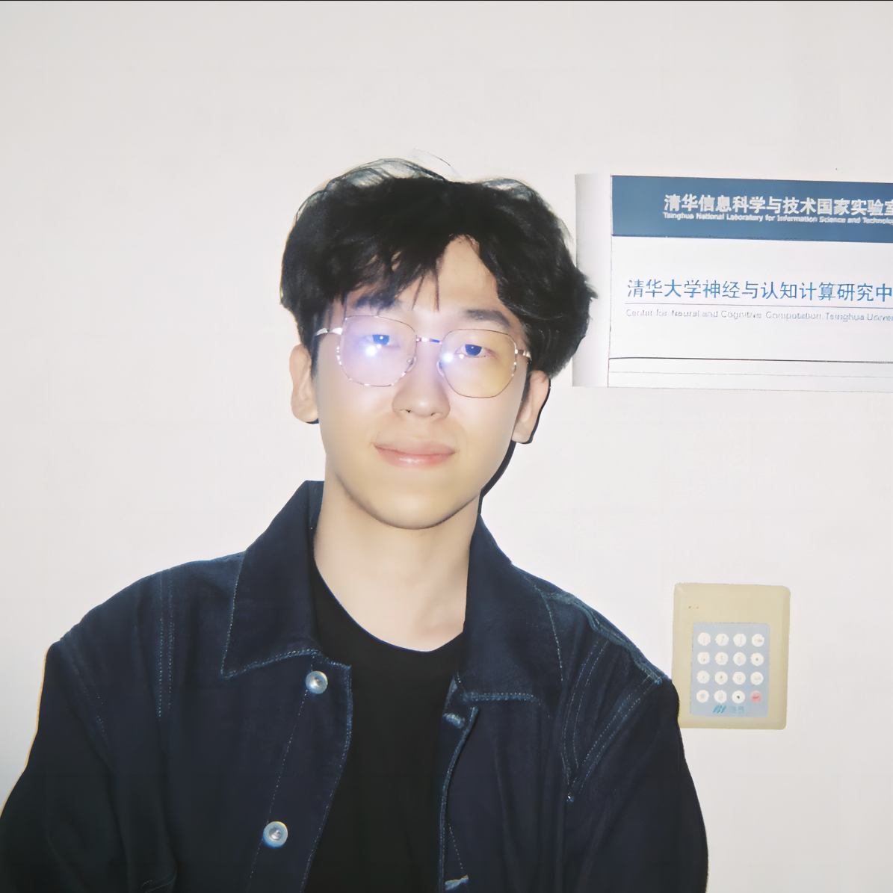

Zhuoyun Du 杜卓耘

M.Eng. student @ Zhejiang University
duzy {at} zju {dot} edu {dot} cn
Bio
I am an M.Eng. student in Data Science at Zhejiang University, advised by Prof. Wei Chen at ZJUVAI. I received my B.Eng. in Computer Science from Jinan University.
I hope to build I use the term machine-native AI agents to describe agents that develop or learn their own representations, communication protocols, coordination structures, and self-improvement mechanisms, rather than inheriting them from human language and organizational workflows. AI agents, with interests in multi-agent collaboration, recursive self-improving,
latent-space communication and reasoning, autonomous evaluation, and post-training. Recent work includes
Interlat


My research began at THUNLP, where I worked with Prof. Zhiyuan Liu and Prof. Chen Qian on how agents organize and coordinate their work. Studying multi-agent collaboration led me to a broader question: how can agents learn to improve the ways they work together?
At Zhejiang University, I explored agent self-improvement through doctor–patient coevolution. At Alibaba, I investigated communication in latent space, asking how agents could exchange information beyond natural-language messages. These experiences shaped my interest in agents that develop their own representations, communication protocols, and mechanisms for self-improvement.
More recently, in the ByteDance Talent Program, I worked on multi-turn dialogue systems, user simulation, autonomous evaluation, and LLM post-training. This experience connected my research interests to the practical challenge of generating useful interaction data and evaluating whether agents are improving. Together, these directions motivate my long-term goal of building machine-native AI agents that learn and improve through interaction.
I have worked at ByteDance Talent Program, Alibaba Group's Future Living Lab, and THUNLP, Tsinghua University. Click an organization to view details.
Beyond research, I enjoy soccer, fencing, snowboarding, billiards, ballroom dancing, piano, photography, and physics. I occasionally write notes on my personal blog and share longer, research-oriented pieces in Posts.
Last updated: